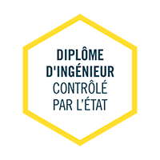

L'ingénierie après un BUT informatique
L'école d'ingénieur est accessible après l'obtention d'un BUT ou encore après une deuxième année de BUT dans des cas exceptionnels.

Qu'est-ce qu'une école d'ingénieur en informatique?
- Être ingénieur en informatique permet une accessibilitée encore plus large de débouchés comme développeur informatique, chef de projet informatique ou encore architecte SI (des systèmes d'information)...
- La formation en école d'ingénieur à une durée de 5 ans (BAC+5) et des stages lors de son cursus permettant l'acquisition d'expérience.
- Les sujets étudiés sont variés comme le C++, Java, UML, réseau, architecture des ordinateurs, jeux vidéos, management, sciences humaines, LV1/LV2...